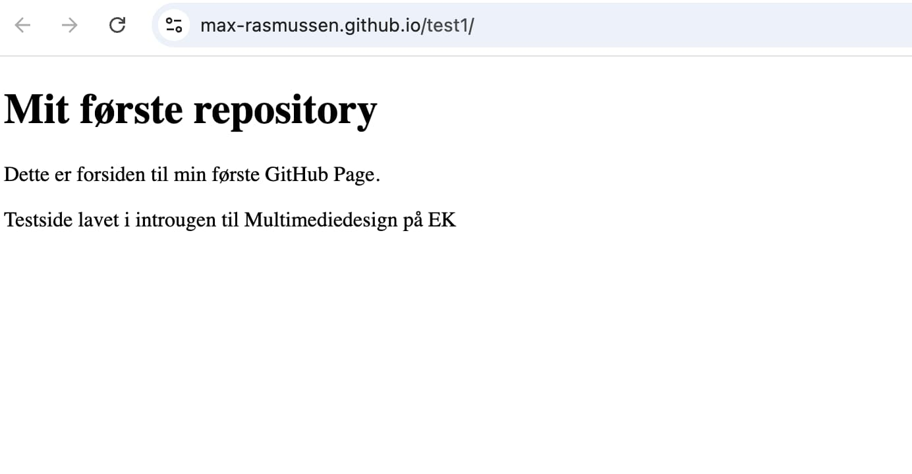
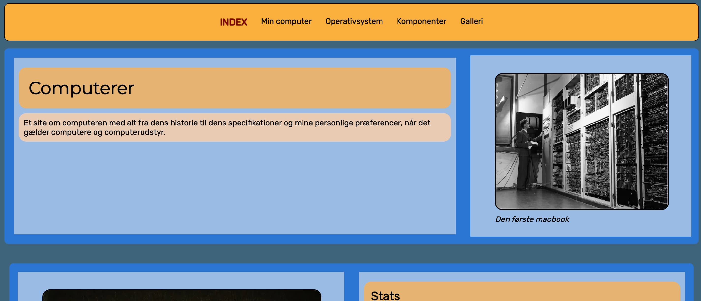
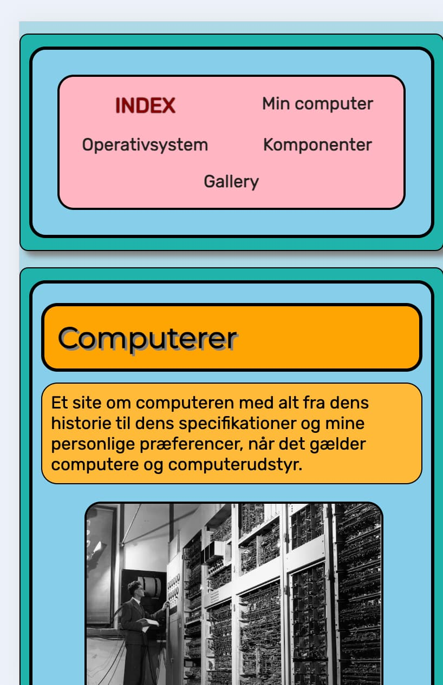
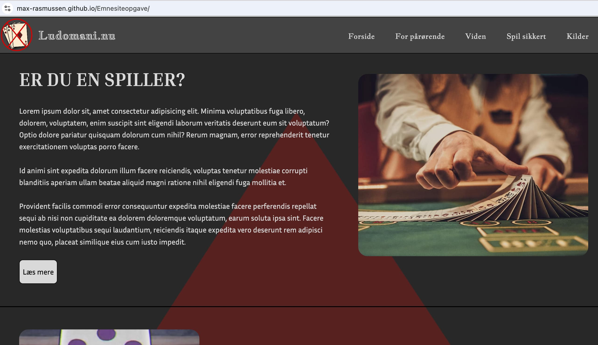
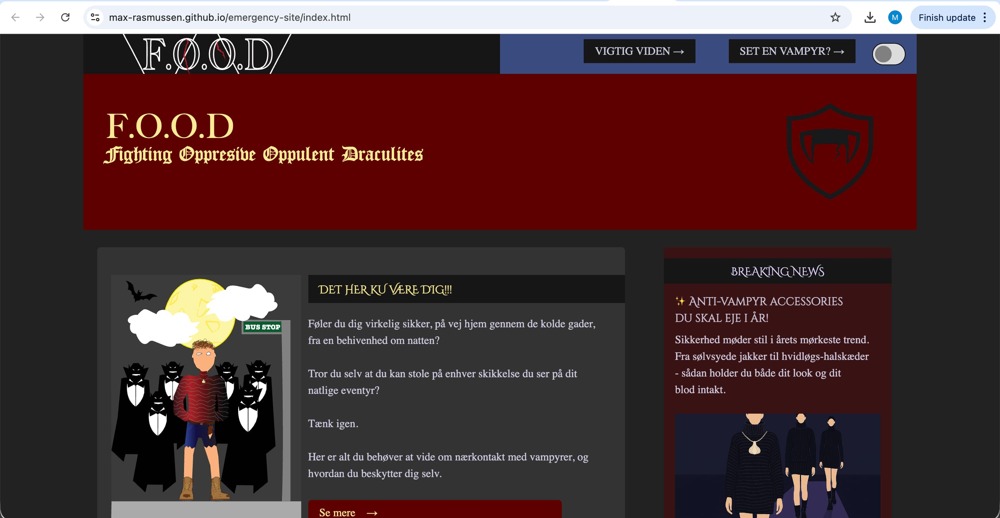
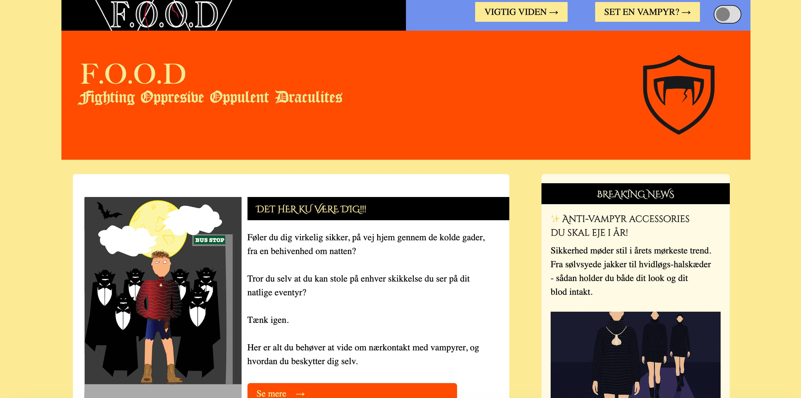
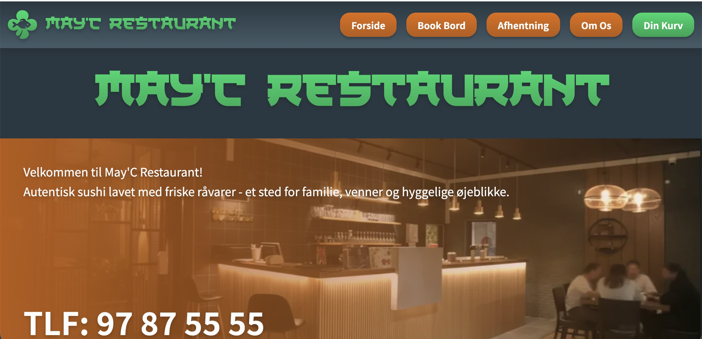
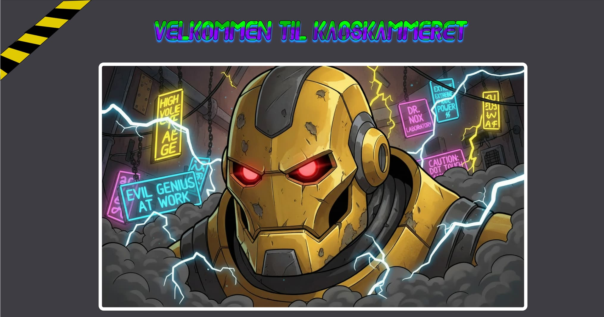
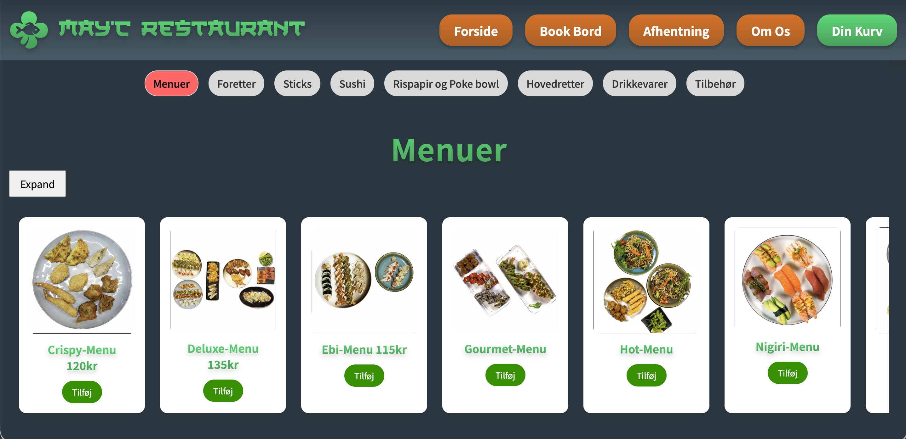

Tidligere Temaer
Tema 1 - Introuge

Overordnet temabeskrivelse
I dette tema blev vi introduceret helt konkret for hvad Multimediedesigner-uddannelsen indebærer. Vi fik et par oplæg fra tidligere fra multimediedesign studerende, for at få indsigt i hvad en multimediedesigner kunne ende op med at arbejde med, hvis vi gennemførte uddannelsen.
Hvad vi lærte om opsummeret:
- Hvad 'multimediedesign' dækker over
- Hvilke fagområder er en del af uddannelsen
- Hvilke professionelle roller har en multimediedesigner og hvilke virksomheder vil en multimediedesigner typisk arbejde for
- Du kommer også til at købe, installere og prøve centrale værktøjer for dit første semester
- Derudover tager vi de første skridt ind i det konkrete arbejde med at producere digitalt indhold og design.
Kort resume af opgaver:
Vi lærte hinanden at kende ved at lave præsentations-kort om hinanden i klassen, med lidt info om os alle. Vi lavede også en lille video sammen, baseret på introer til forskellige serier. Vores video var baseret på “The office”. Udover det lavede vi også vores første test-side, for at sikre alle lærte at bruge github til at hoste websites.
Hvad jeg fik ud af det:
Jeg lærte en del om selve uddannelsen, og hvad jeg kan gøre fremadrettet, hvis jeg fuldfører den. Derudover lærte jeg om de fagområder uddannelsen fokuserer på, og hvilke forskellige karrierer det kan føre til. Derudover begyndte vi på html og github, hvor jeg allerede havde lidt erfaring, men jeg havde aldrig prøvet at hoste en side på github, så det var brugbart.
Forskellige links til opgaver:
PræsentationsKort:
PræsentationsKort:

Præsentationskort om en klassekammerat. Kortet inkludere general viden om personen, som vi fik fra at interview hinanden.
Uge-opgave (intro video):
Uge-opgave (intro video):
Vi skulle lave en intro inspireret af en serie. Min gruppe valgte the office. Vi genskabte scener hovedsageligt på ek's område, og prøvede at matche humoren.
Test-site:
Test-site:
Vi skulle lave vores første test side for at lære hvordan vi hoster dem ved hjælp af github pages.
Grundlæggende Web
Overordnet tema beskrivelse
“Du vil blive introduceret til grundlæggende faglige begreber inden for design af digitale brugergrænseflader, digital indholdsproduktion, digital kommunikation og responsivt webdesign.” Det er en meget passende beskrivelse (fra itslearning) af dette første “rigtige” tema vi havde. Vi blev introduceret til nogle af de grundlæggende faglige begreber og værktøjer som vi kommer til at bruge resten af vores uddannelse.
Opgaverne opsummeret:
Vi fik til opgave at lave en mobil hjemmeside udfra udleveret wireframe og indhold. Først skulle vi lave en side med flere undersider med alt indholdet, og derefter skulle vi udvikle yderligere på den, for at få den til at være responsiv til både mobil og computer skærm størresler. Jeg indså dog ikke dette var pointen, så begge mine sider var responsive, men jeg fik eksperimenteret med layout.
Hvad vi lærte om helt konkret
General html strukturl & CSS, grids & flexboxe, fonte, linking af style sheets & linking til andre sider, billeder, responsivt design på hjemmesider, og design i figma.
Hvad jeg fik ud af temaet
En basis forståelse af ovennævnte ting, og hvor vigtig ordentligt mappe- og kode struktur, så man ikke roder rundt i tingene. Jeg lærte at sætte websider op med html og css, og lidt om design i figma. Alt dette bliver bygget yderligere på senere, men her lærte jeg fundamentalt om de forskellige ting.
De forskellige opgaver vi lavede:
Mobilsite
Mobilsite
I denne opgave skulle vi lave en mobil site ud fra udleveret wireframe, og indhold. Altså var både billeder og tekst allerede lavet til os, og vi skulle bare finde en måde at opsætte det på.
Website
Website
Denne opgave var en fortsættelse af den tidligere, hvor siden nu skal kunne blive større og mindre og stadig fungere. Både min tidligere side og den her var dog responsive, da jeg ikke vidste det først var her den skulle kunne virke, så jeg brugte egentlig bare tiden på at eksperimentere med layoutet. Fed opgave udover det, jeg lærte meget.
Grundlæggende UX
Temabeskrivelse forenklet
“Formålet med temaet er at give dig erfaring med udvalgte UX/UI-metoder samt at lære dig, hvordan du præsenterer din proces med design og udvikling af produkt/løsning, samt formidler dine research- og testresultater for interessenter.”
Hvad vi lærte om
Vi lærte yderligere om at bygge hjemmesider ved hjælp af html og css. Derudover fokuserede vi meget mere på processen denne omgang da vi selv skulle finde på emne og lave indhold til det. Vi gik derfor fra fuldkommen bar bund, og skulle brainstorme emner, og gå gennem hele processen (eller så meget af den vi nu var blevet lært) af at udarbejde en side.
Hvad jeg fik ud af det
Lærte meget om hvordan sådan en arbejdsproces kan se ud, og hvorfor det kan være med til at raffinere et endeligt produkt bedre. Derudover låner det meget troværdighed til designeren at støtte sig op rundt om alle disse tidligere tanker osv når de fremviser produktet til brugeren.
Temaopgaven (Emnesite)
Emnesite (Ludomani)
I denne opgave designede vi hver især en website, udfra eget emne. Mit emne var ludomani, da jeg personligt kender mange der har brokket sig over deres oplevelse af anti-ludomani sidder, og hvor kedelige de ofte er. Vores side skulle være responsiv, til både store og små skærme.. Vi skulle dokumentere vores arbejdsproces undervejs, ud fra hvad vi var blevet lært i undervisningen. Det var det første tema hvor vi skulle gå gennem hele processen, fra brainstorm til endeligt produkt.
De forskellige links til opgaven:
Tema 04 - Grundlæggende Brugergrænsefladeudvikling
Overordnet tema beskrivelse
“I dette tema vil du komme til at arbejde med udvikling af brugergrænsefladen på et site, som du får udleveret. Brugergrænsefladen skal udvikles med vigtige værktøjer som Adobe Illustrator, CSS og JavaScript. Vi introducerer Adobe Illustrator og arbejder med vektorgrafik i SVG-formatet. Vi introducerer også programmeringssproget JavaScript, som bruges til at håndtere funktionalitet på sitet. Derudover får du flere avancerede færdigheder i CSS.”
Hvad jeg fik ud af det
Jeg lærte at bruge noget javascript til at tilføje klasser og fjerne dem (for at toggle dark mode, gemme forms resultater og gøre ting større når hoveret) og html’s form funktion blev introduceret til os. Derudover lærte vi at tegne i illustrator, og lidt om logo design. Interessant tema, da vi fik lov til at lave noget lidt fjollet her. Lærte også personligt lidt mere om hjemmesiders layout, og hvordan man kan gøre det interessant.
Emergency-site (Temaopgave)
Emergency-site (Vampyr)
Vi skulle lave en hjemmeside designet til at hjælpe folk i en nødsituation/krise. Jeg valgte den nødsituation at vampyre er ægte og jagter folk hvis de dufter godt. Brugeren i denne case er en som har et vampyr-problem. Siden skulle indeholde en svg fil, med forskellige dele der blev større når man trykkede en knap, (det skulle man bruge javascript til). Derudover skulle siden også indeholde en form som brugeren skulle kunne udfylde, og en light og dark mode der skulle kunne toggles.
De forskellige links til opgaven:
Grundlæggende indhold
Overordnet tema beskrivelse
Dette tema giver dig en grundlæggende indførsel i indholdsproduktion, herunder præproduktion, selve produktionen, samt postproduktion. Du vil blive introduceret til grundlæggende faglige begreber inden for indholdsproduktion, og du benytter derudover de færdigheder, du har fået i de foregående temaer til at redesigne en virksomheds hjemmeside.Hvad vi lærte om helt konkret
Vi lærte om indholdsproduktion, fra start til slut. Derudover skulle vi re-designe en virksomhed, hvor vi skulle producere meget af indholdet til den, da virksomhedens brandpersonlighed skulle redesignes.Hvad jeg fik ud af det
Jeg lærte personligt meget javascript, og fik leget med noget photoshop og aftereffects, selvom vi endte med ikke at bruge det. Derudover legede vi med at redesigne logo’er, hvilket var første gang jeg selv fik prøvet det. Jeg indså også at det at redesigne en hjemmeside kan være en større opgave, i hvertfald når man lige skal lære en god del af det flyvende. Alt i alt et lærerigt tema, og det var en god erfaring for fremtiden at arbejde med andre.Sandkasse-site
Sandkasse-site
Denne opgave gik ud på hovedsageligt at opfriske vores programmeringsevner før vores større virksomheds-site opgave. Derudover var der også fokus på at lave indholdet selv, som skulle passe til temaet. Mindre fejlkilde dog, jeg overså dette da jeg læste opgavebeskrivelsen, så jeg ai generede mit indhold, og da jeg så læste det var meningen man skulle lave sine egne billeder, havde jeg desværre ikke tiden. Min side gik efter et “ondt videnskabs mand”-look, og jeg ville gerne have haft ting som en robot støvsuger osv, photoshoppet ind i et beskidt værksted, for at ligne mine “opfindelser”. Jeg blev desværre ikke færdig med opgaven, men fik lidt erfaring i hvad der kunne nås i hvilken tidsramme.
Link til det jeg nåede
Virksomheds-side
Virksomheds-side (May’c sushi resturant)
Opgaven gik som sagt ud på at re-designe en virksomhed, gerne en mand havde et forhold til. Dette var vores første gruppe-arbejdsopgave, så vi startede ud med at lave trello og onedrive for at organisere os, og fordele arbejdsopgaverne ved hjælp af det. Vi redesignede may’c restaurant i grev, da vi mente den havde brug for en mere moderne side. På grund af komplikationer i slutningen, endte vi desværre ikke med at opnå præcis det vi gerne ville, men siden fungerede, og var stadig en forbedring over den sidste. Jeg lærte personligt meget, og det var kæmpe at se hvordan arbejdet kan fordeles når man er flere om det.
Links til opgaven